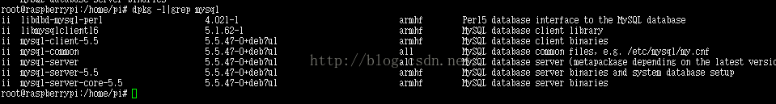

原文链接：http://blog.csdn.net/faryang/article/details/50788795
使用dpkg -l|grep MySQL：查看是否安装mysql

注意：在2016-02-26-raspbian-jessie这个版本中：系统安装了mysql和java
在2015-05-05-raspbian-wheezy这个版本中：系统没有安装mysql、java
1、卸载mysql
一开始安装的操作系统是raspbian-jessie，故需要将mysql卸载掉，如果安装的是2015-05-05-raspbian-wheezy系统，跳过此步骤
ii mysql-client-5.5 5.5.47-0+deb7u1 armhf MySQL database client binaries
ii mysql-common 5.5.47-0+deb7u1 all MySQL database common files, e.g. /etc/mysql/my.cnf
ii mysql-server 5.5.47-0+deb7u1 all MySQL database server (metapackage depending on the latest version)
ii mysql-server-5.5 5.5.47-0+deb7u1 armhf MySQL database server binaries and system database setup
ii mysql-server-core-5.5 5.5.47-0+deb7u1 armhf MySQL database server binaries
利用下面来卸载上面的软件：
apt-get remove 软件名称（例如：apt-get remove mysql-server）
将上面软件卸载完后，开始安装mysql
2、安装mysql（这里用的是root用户，如果没有开启root用户，可以参考本人的《初次使用树莓派并启用root用户》这篇文章）
apt-get install mysql-server
等待下载安装，在安装过程中，会出现提示输入两次root账户密码来设置mysql中root账户密码
安装完后
输入：mysql -uroot -p密码登录mysql
3、开启mysql远程访问
3.1修改/etc/mysql/my.cnf文件
找到下面这行，并用#注释掉，
或者修改为bind-address = 0.0.0.0
3.2登录mysql，输入下面命令
mysql>grant all privileges on *.* to username@"%" identified by "password";（username一般是root，password是新的密码）
mysql> FLUSH PRIVILEGES;
4、开启3306端口远程访问
这里的iptable命令和centos中命令不一样，所以参考了一下文档，使用 ufw软件来开启3306端口
4.1安装ufw
apt-get installufw
4.2启用ufw
ufw enable
ufw default deny
4.3开启3306、22（ssh端口）端口
ufw allow 3306
ufw allow 22
注意：如果不开启22端口，下次启动树莓派时，系统的22端口会禁用，不能使用ssh登录树莓派
5、重新启动系统
这里不知道在树莓派下这个系统里重新启动mysql，所以为了使得配置参数生效，这里选择重新启动操作系统，使用reboot这个命令
6、解决远程连接出现1045的错误
ERROR 1045 (28000): Access denied for user 'root'@'localhost' (using password: NO）
这里贴了一个别人写的解决文档
# mysql -u root -p
Enter password:
ERROR 1045 (28000): Access denied for user 'root'@'localhost' (using password: NO）
或者
# mysql -u root -p password 'newpassword'
Enter password:
mysqladmin: connect to server at 'localhost' failed
error: 'Access denied for user 'root'@'localhost' (using password: YES)'
出现此错误时：
1.关闭 # service mysqld stop
2.屏蔽权限 # mysqld_safe --skip-grant-table 屏幕出现： Starting demo from .....
3.新开起一个终端输入 # mysql -u root mysql mysql> UPDATE user SET Password=PASSWORD('newpassword') where USER='root'; mysql> FLUSH PRIVILEGES;//记得要这句话，否则如果关闭先前的终端，又会出现原来的错误 mysql> \q 。